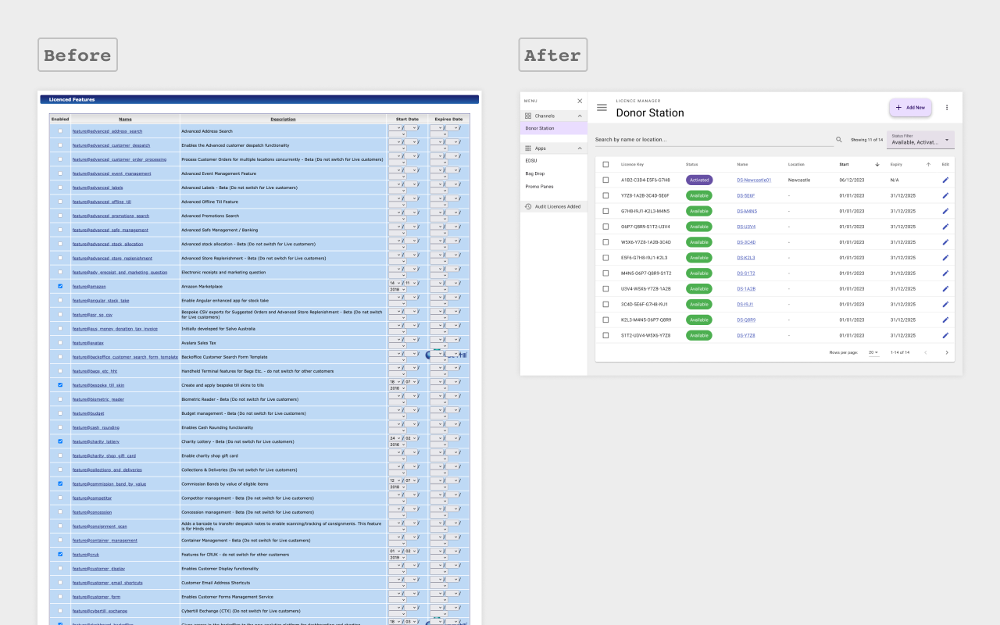

Building Cybertill's Licence Manager & Configuration Tools
I designed Cybertill’s Licence Manager and a new Settings & Configuration area, replacing manual, table-based processes with scalable tools that can manage 1,000+ licences across devices. Working with 6 stakeholders, I produced over 60 wireframes and prototypes between Jan–Sep 2024. The designs introduced side navigation, collapsible sections, and per-device control, laying the groundwork for retailer self-service.
Understanding the Brief
We were tasked with designing a Licence Manager to help retailers manage their ongoing licences with Cybertill, with a long-term vision of enabling self-service functionality.
Previously, licences were handled manually by finance teams through the back office. Retailers could only toggle a single licence per organisation, displayed in long tables with no search or grouping. With new modular products (e.g. Donor Stations, customer displays, and apps), the system needed to support granular per-device licence management for both small retailers (5 licences) and large enterprises (1,000+).

Mapping the Workflow
Collaborated with 6 stakeholders (product owners, architects, and developers) in weekly stand-ups, mapping 2+ key flows and iterating designs through 10+ feedback cycles. Navigation and wayfinding were major talking points, especially around devices with multiple linked licences.
We set a design target of completing common tasks (viewing or updating a licence) in 3–4 clicks, with future search functionality planned to make locating licences even faster.
Outputs:
- 23 wireframe screens (Jan 2024) View Wireframe
- 21 prototype screens (Apr 2024) View Prototype

Designing for Scalability
Wireframes and prototypes were designed to scale from 5 licences to 1,000+. Retailers could now view, add, remove, enable/disable, and move licences between devices — a major shift from the old “1 licence per retailer” approach.
We introduced:
- Side navigation with collapsible sections, reducing scrolling.
- Linked licence management surfaced directly from device views.
- Material Design components, ensuring consistency and aligning with WCAG standards.
Feedback from internal stakeholders and retailer discussions informed the designs, which were later converted into a Material framework to support 20+ developer stories.

Settings & Configuration Area
In parallel, we redesigned the settings and configuration area, which previously relied on long, table-based screens that forced heavy scrolling. The new design introduced grouped navigation and collapsible sections, making it easier to find and adjust system settings.
This project ran Apr–Sep 2024 and produced:
- 19 wireframe screens View Wireframe
- 7 prototype screens View Prototype
The settings covered 12+ configurable components linked directly to hardware (e.g. Donor Station), requiring extended collaboration with architects, product owners, and hardware teams.

Wireframing & Prototyping
Across both projects I delivered 60+ design screens (wireframes and prototypes). Prototypes included live previews, showing users how configuration changes would impact customer-facing tools like the Donor Station in real time.

Iterative Development & Collaboration
- Regular demos with 5-10 stakeholders and retailers throughout 2024.
- Iterated designs collaboratively to balance usability with technical feasibility.
- Applied Material Design consistently to provide a modern, developer-friendly framework.

Delivering Results
Although both tools remain unreleased, the designs achieved:
- A Licence Manager capable of granular, per-device licence control at scale.
- A Settings & Configuration area with structured navigation and improved flexibility.
- Reduced cognitive load by replacing long tables with collapsible sections.
- A foundation for moving from manual, finance-led licence management to retailer self-service.